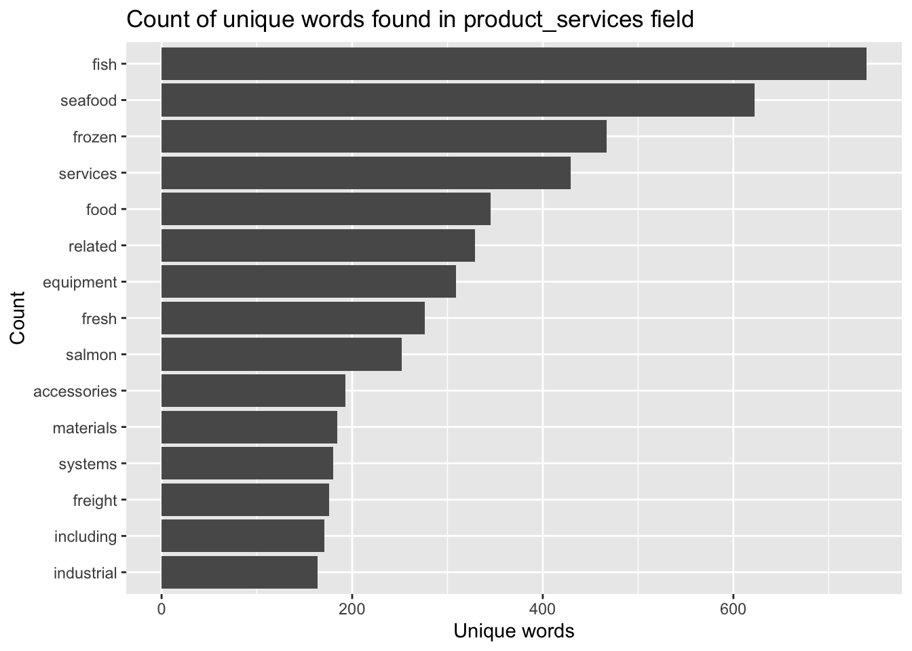
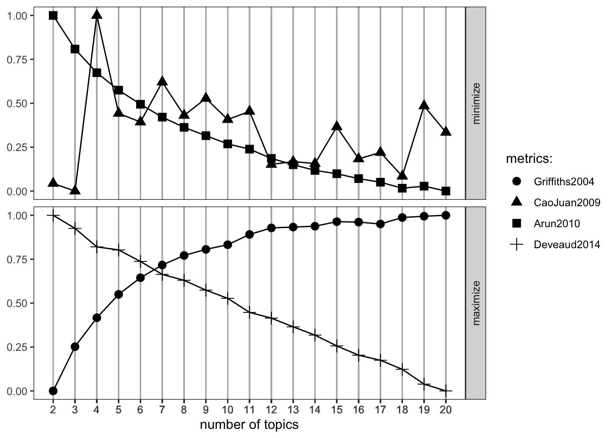
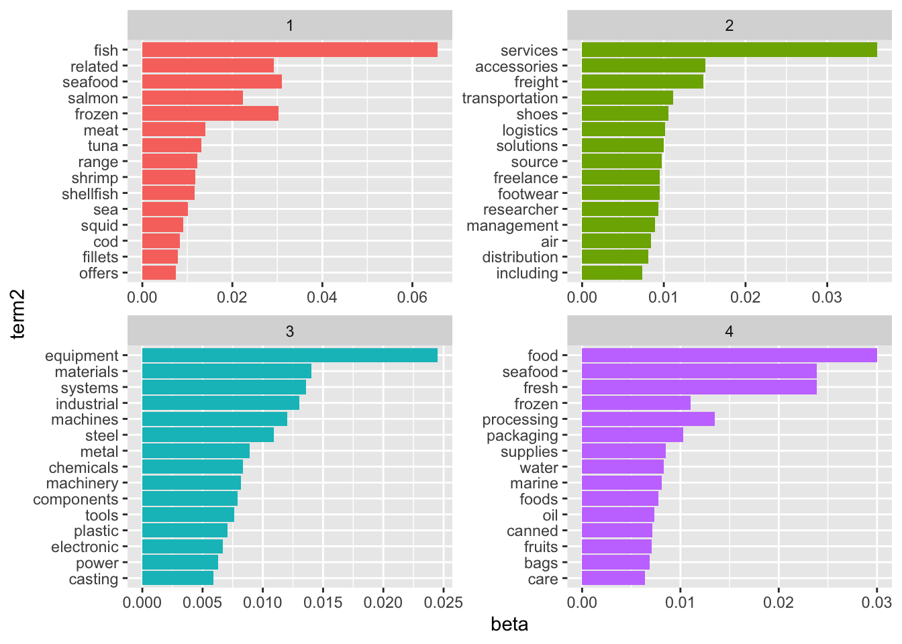
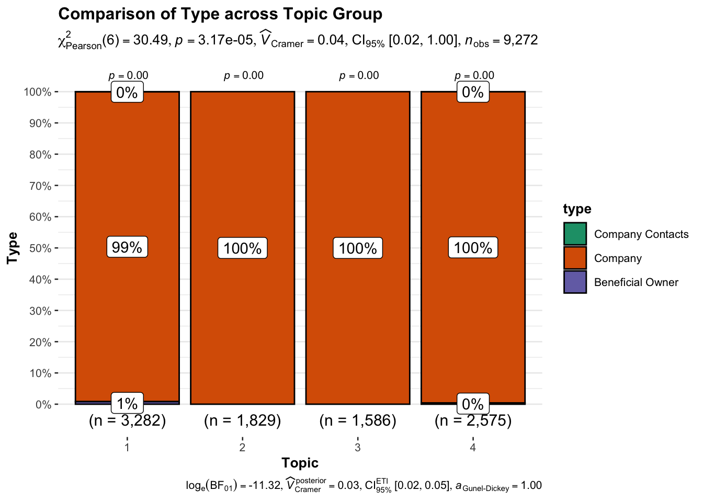
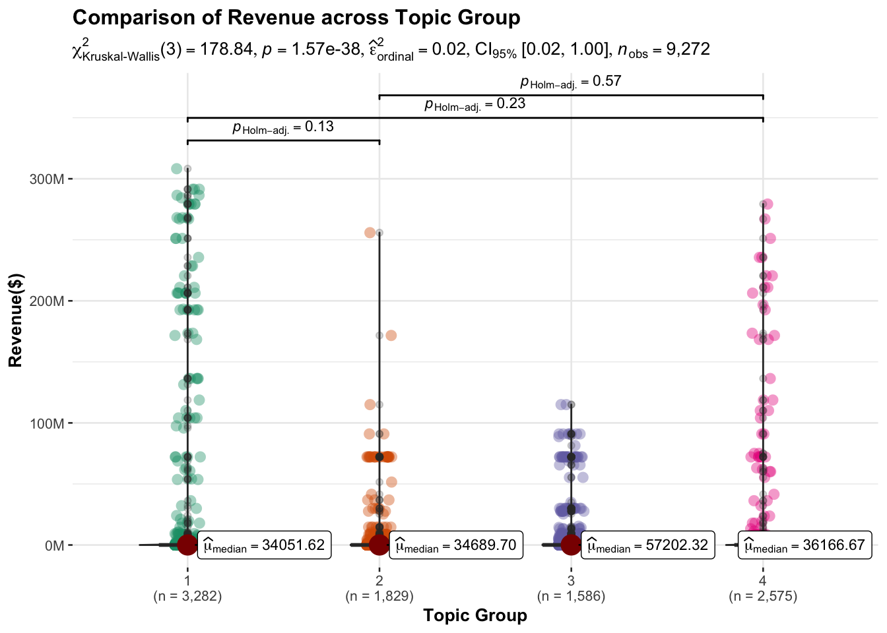
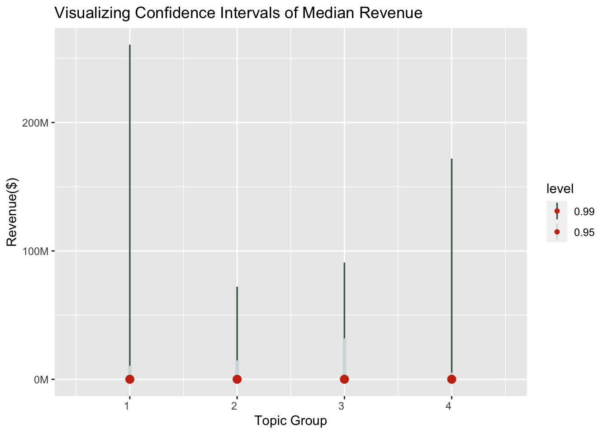

pacman::p_load(jsonlite, tidygraph, ggraph,
visNetwork, graphlayouts, ggforce,
skimr, tidytext, tidyverse,ldatuning)
options(scipen = 999) library(shiny) library(bslib) library(tidyverse) library(jsonlite) library(tidytext) library(wordcloud2) library(tidytext) library(shiny.semantic) library(shinydashboard) library(shinycssloaders)
#importing the data
MC3_challenge <- fromJSON("data/MC3.json")
#extracting edges
MC3_edges <-as_tibble(MC3_challenge$links) %>%
distinct() %>%
mutate(source = as.character(source),
target = as.character(target),
type = as.character(type)) %>%
group_by(source,target, type) %>%
summarise(weights = n()) %>%
filter (source != target) %>%
ungroup()`summarise()` has grouped output by 'source', 'target'. You can override using
the `.groups` argument.#extrading nodes
MC3_nodes <-as_tibble(MC3_challenge$nodes) %>%
mutate(country = as.character(country),
id = as.character(id),
product_services = as.character(product_services),
revenue_omu = as.numeric(as.character(revenue_omu)),
type = as.character(type)) %>%
select(id,country,type,revenue_omu,product_services)Warning: There was 1 warning in `mutate()`.
ℹ In argument: `revenue_omu = as.numeric(as.character(revenue_omu))`.
Caused by warning:
! NAs introduced by coercion#default masterlist
id1 <- MC3_edges %>%
select(source) %>%
rename(id = source)
id2 <- MC3_edges %>%
select(target) %>%
rename(id = target)
MC3_nodes_master <- rbind(id1, id2) %>%
distinct() %>%
left_join(MC3_nodes,
unmatched = "drop")Joining with `by = join_by(id)`#create new node df to include id number
MC3_nodes_Masterlist <- MC3_nodes_master %>%
select(id) %>%
distinct() %>%
rename(label = id) %>%
ungroup()
#add ID to nodes dataframe
MC3_masternodes <- MC3_nodes_Masterlist %>%
mutate(id = as.character(1:nrow(MC3_nodes_Masterlist))) %>%
relocate(id,label) %>%
ungroup()
#to append correspoinding id through left_join
MC3_edges_addID <- MC3_edges %>%
rename(sourcelabel = source, targetlabel = target) %>%
left_join(MC3_masternodes, by = c("sourcelabel" = "label")) %>%
rename(source = id) %>%
left_join(MC3_masternodes, by = c("targetlabel" = "label")) %>%
rename(target = id) %>%
relocate(source,target)#word related code from this line
#unnest words
token_nodes <- MC3_nodes %>%
unnest_tokens(word, product_services)
#remove stop_words
stopwords_removed <- token_nodes %>%
anti_join(stop_words)Joining with `by = join_by(word)`#remove generic words
remove_characters <- c("character", "0","unknown","products","services",
"including", "source", "offers","range", "related")
#create dataframe of each word with frequency
stopwords_removed_freq <- stopwords_removed %>%
filter(!word %in% remove_characters) %>%
group_by(word) %>%
summarize(count = n()) %>%
arrange(desc(count)) %>%
ungroup()library(topicmodels)
token_nodes %>%
count(word, sort = TRUE) %>%
top_n(15) %>%
mutate(word = reorder(word, n)) %>%
ggplot(aes(x = word, y = n)) +
geom_col() +
xlab(NULL) +
coord_flip() +
labs(x = "Count",
y = "Unique words",
title = "Count of unique words found in product_services field")Selecting by n
token_nodes$word[token_nodes$word == "character"] <- "NA"
token_nodes$word[token_nodes$word == "0"] <- "NA"
#remove stop_words
stopwords_removed <- token_nodes %>%
anti_join(stop_words) %>%
filter(!word %in% c("NA", "unknown", "products"))Joining with `by = join_by(word)`dim(stopwords_removed)[1] 44082 5stopwords_removed %>%
count(word, sort = TRUE) %>%
top_n(15) %>%
mutate(word = reorder(word, n)) %>%
ggplot(aes(x = word, y = n)) +
geom_col() +
xlab(NULL) +
coord_flip() +
labs(x = "Count",
y = "Unique words",
title = "Count of unique words found in product_services field")Selecting by n
# using as.matrix()
MC3_text <- stopwords_removed %>%
count(id, word) %>% # count each word used in each identified review
cast_dtm(id, word, n) %>% # use the word counts by reviews to create a DTM
as.matrix()
# create models with different number of topics
result <- ldatuning::FindTopicsNumber(
MC3_text,
topics = seq(from = 2, to = 20, by = 1),
metrics = c("Griffiths2004", "CaoJuan2009", "Arun2010", "Deveaud2014"),
method = "Gibbs",
control = list(seed = 77),
verbose = TRUE
)fit models... done.
calculate metrics:
Griffiths2004... done.
CaoJuan2009... done.
Arun2010... done.
Deveaud2014... done.FindTopicsNumber_plot(result)Warning: The `<scale>` argument of `guides()` cannot be `FALSE`. Use "none" instead as
of ggplot2 3.3.4.
ℹ The deprecated feature was likely used in the ldatuning package.
Please report the issue at <https://github.com/nikita-moor/ldatuning/issues>.
TOPIC NUMBER OVER HERE
# number of topics
K <- 4
# set random number generator seed
set.seed(1234)
# compute the LDA model, inference via 1000 iterations of Gibbs sampling
topicModel <- LDA(MC3_text, K, method="Gibbs", control=list(iter = 500, verbose = 25))K = 4; V = 7746; M = 3894
Sampling 500 iterations!
Iteration 25 ...
Iteration 50 ...
Iteration 75 ...
Iteration 100 ...
Iteration 125 ...
Iteration 150 ...
Iteration 175 ...
Iteration 200 ...
Iteration 225 ...
Iteration 250 ...
Iteration 275 ...
Iteration 300 ...
Iteration 325 ...
Iteration 350 ...
Iteration 375 ...
Iteration 400 ...
Iteration 425 ...
Iteration 450 ...
Iteration 475 ...
Iteration 500 ...
Gibbs sampling completed!lda_topics <- topicModel %>%
tidy(matrix = "beta")
lda_topics <- LDA(
MC3_text,
K,
method = "Gibbs",
control = list(seed=42)
) %>%
tidy(matrix = "beta")
word_probs <- lda_topics %>%
group_by(topic) %>%
top_n(15, beta) %>%
ungroup() %>%
mutate(term2 = fct_reorder(term, beta))
ggplot(
word_probs,
aes(term2, beta, fill=as.factor(topic))
) +
geom_col(show.legend = FALSE) +
facet_wrap(~ topic, scales = "free") +
coord_flip()
library(knitr)
library(hrbrthemes)NOTE: Either Arial Narrow or Roboto Condensed fonts are required to use these themes. Please use hrbrthemes::import_roboto_condensed() to install Roboto Condensed and if Arial Narrow is not on your system, please see https://bit.ly/arialnarrowlibrary(RColorBrewer)
library(ggiraph)
#analyze company based on topic
stopwords_removed_join <- stopwords_removed %>%
left_join(word_probs, by = c("word" = "term2"), unmatched= "drop") %>%
na.omit()Warning in left_join(., word_probs, by = c(word = "term2"), unmatched = "drop"): Detected an unexpected many-to-many relationship between `x` and `y`.
ℹ Row 130 of `x` matches multiple rows in `y`.
ℹ Row 2 of `y` matches multiple rows in `x`.
ℹ If a many-to-many relationship is expected, set `relationship =
"many-to-many"` to silence this warning.#select and aggregate
company_bytopic <- stopwords_removed_join %>%
select(id,topic,type) %>%
group_by(id,topic,type) %>%
summarize(count = n()) %>%
arrange(desc(count)) %>%
ungroup()`summarise()` has grouped output by 'id', 'topic'. You can override using the
`.groups` argument.#search for distinct id
company_by_topic_user <- company_bytopic %>%
filter(id == "Assam Limited Liability Company") %>%
ungroup()
#create tooltip to display total count
company_by_topic_user$tooltip <-c(paste0(
"Count: ", company_by_topic_user$count))
#tool_tip design
tooltip_css <- "background-color: lightgrey; #<<
font-style:bold; color: #446455;" #<<
#create a bar chart based on distributio of topic by ID
app <- ggplot(company_by_topic_user,
aes(x= topic, y= count)) +
geom_bar_interactive(aes(tooltip= company_by_topic_user$tooltip),
width =1, stat = "identity") +
scale_fill_brewer(palette= "Dark2") + #to standardize color theme
labs(title = "Distribution of Topic by ID",
x = "Topic Group", y= "Count") +
theme_ipsum() +
theme(plot.title = element_text(hjust = 0.5)) #align the title
girafe(
ggobj = app,
width_svg = 8,
height_svg = 6*0.618,
options = list( #<<
opts_tooltip(css = tooltip_css), #<<
opts_hover_inv(css = "opacity:0.1;") #<<
)
)Warning: Use of `company_by_topic_user$tooltip` is discouraged.
ℹ Use `tooltip` instead.STATS FROM HERE.
At 95% confidence level,
Ho : No association exists between the topic group and business type H1: Association exists between the topic group and business type
#statistical portion
#library required
library(ggstatsplot)You can cite this package as:
Patil, I. (2021). Visualizations with statistical details: The 'ggstatsplot' approach.
Journal of Open Source Software, 6(61), 3167, doi:10.21105/joss.03167#if want to change variable, might need to filter ID to be able to do country
ggbarstats(data = stopwords_removed_join,
x = type, y = topic,
xlab= "Topic", ylab = "Type",
title = "Comparison of Type across Topic Group",
type = "nonparametric", conf.level = 0.95
)
From the test result above, (p<0.05) , we conclude that there is an association between the topic group and business type as we reject the null hypothesis.
Anova Test
Ho : the median revenue across different topic group is the same
H1: the median revenue across different topic group is not the same
#library required
library(scales)
Attaching package: 'scales'The following object is masked from 'package:purrr':
discardThe following object is masked from 'package:readr':
col_factorlibrary(ggstatsplot)
#code for anova test
ggbetweenstats(data = stopwords_removed_join,
x= topic, y= revenue_omu, type ="np",
xlab= "Topic Group", ylab = "Revenue($)",
title = "Comparison of Revenue across Topic Group",
pairwise.comparisons = TRUE, pairwise.display ="ns", conf.level = 0.95
) +
scale_y_continuous(labels = label_number(scale = 1e-6, suffix = "M"))Scale for y is already present.
Adding another scale for y, which will replace the existing scale.
P-value is lower than the 0.05.
- > reject the null hypothesis that the median revenue across topic group is the same.
-> by the arrows above, not all pair comparison are statistically significant. 3 Paris with p-value >0.05. Cannot reject null hypothesis that there is no differences between the topic group and revenue.
CONFIDENCE INTERVAL
library(ggdist)
library(scales)
#plot points and intervals
ggplot(data = stopwords_removed_join,
aes(x = topic, y = revenue_omu)) +
stat_pointinterval(aes(interval_color = after_stat(level)),
point_interval = "median_qi",
.width = c(0.95,0.99),
point_color = "#C93312") +
labs(title = "Visualizing Confidence Intervals of Median Revenue",
x = "Topic Group", y = "Revenue($)") +
#add colors to graph
scale_color_manual(values = c("#446455","#D3DDDC"),
aesthetics = "interval_color") +
theme(axis.text.x = element_text(vjust = 1, hjust=1)) +
scale_y_continuous(labels = label_number(scale = 1e-6, suffix = "M"))